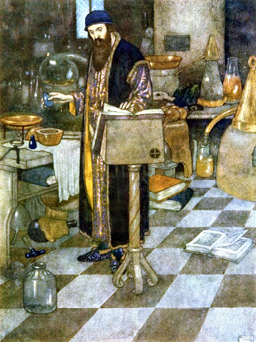
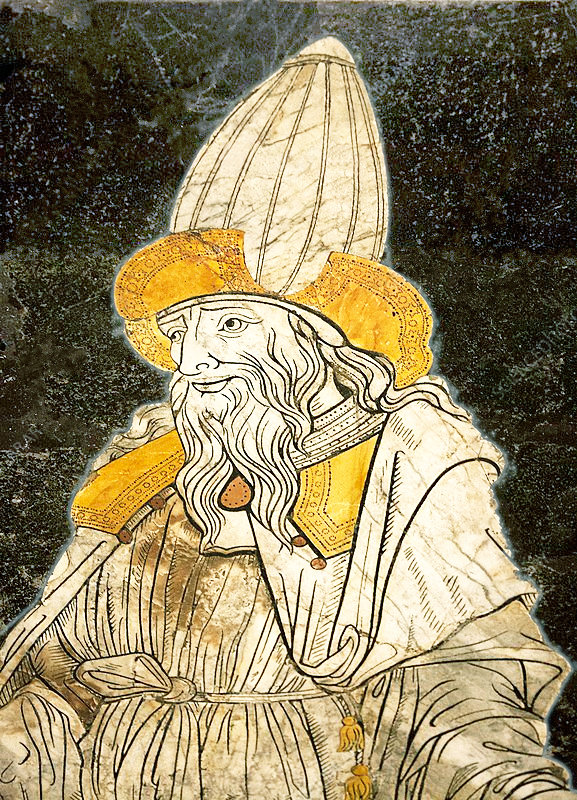
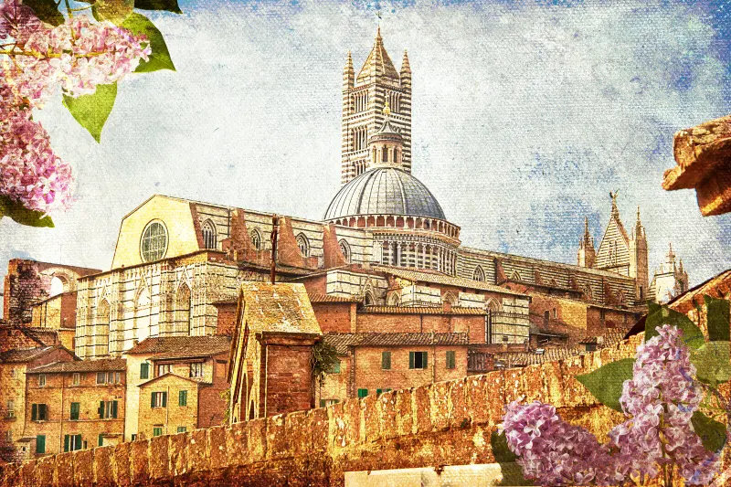
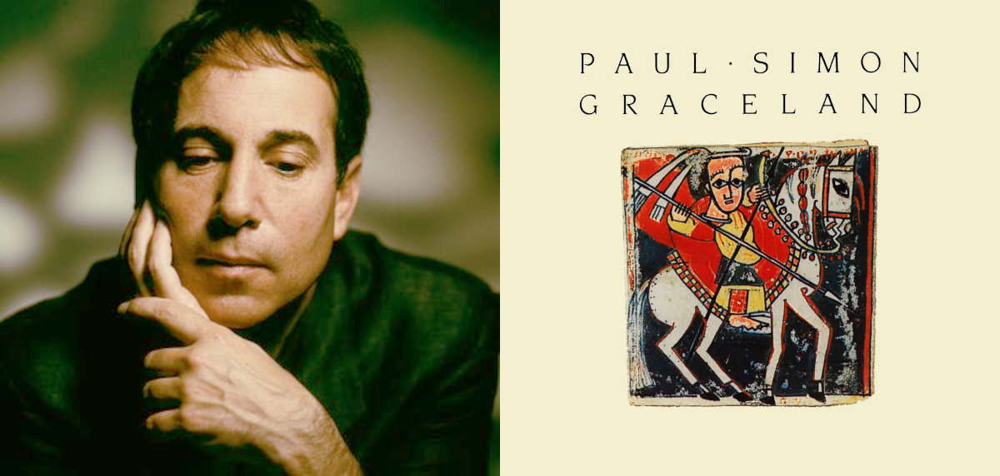
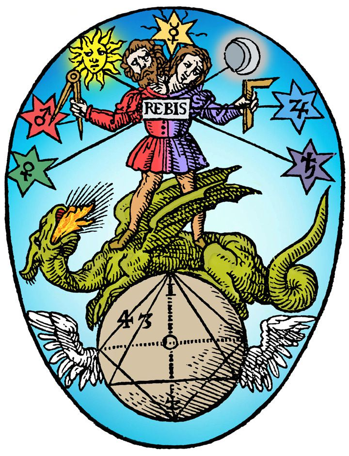

"Magician" by Edmund Dulac
Hermetic Astrological Magic, Medicine and Alchemy
Ever since the ancient world, astrology has been applied to many fields of human endeavour. In modern times these have been reduced (rationalised) to scientific disciplines, such that magic turned into physics, alchemy into chemistry and the ancient medicine into diagnostics, medical theory, surgery and applied pharmacy. Here we shall investigate what these originally really were to their fullest and most elaborate extent. To make things clear, the term Magic here means the intentional manipulation of substances in the physical world by the employment of supernatural agencies.Why Is There Magic ?
Magic is seemingly more of a phenomenon occurring as a belief than as a substantial reality of intentional alteration of the material world. The fact that so much has been written about it, and so many people touched by it, represents a great need in very many people. Some (suggested) fundamental notions contributing to the existence of magic:- fascination for the supernatural
- desire for something greater
- everyday situations often demand more skill than peronally at hand
- belief that someone having special powers can help
- wishful thinking
- Sorcerer (derived from the Middle French term, "Sorcier", which is from the Latin word "sortiārius" meaning one who casts sorts/lots, a type of divination)
- Magician (derived from the Greek term "mágos" (μάγος), a Zoroastrian Priest, replacing the earlier term "goēs" (γόης), astrologer or alchemist)
- Wizard (from the Middle English word "Wys", meaning philosopher or sage)
- Witch (from the Old Germanic word "Wicht" meaning supernatural being or simply white)
- Healer, Herbalist or Apothecary (because of their treatments for sickness usually in the form of potions)
- Alchemist (due to claims of connection to the Divine)
Here are some comments from Bronislaw Malinowski, the leading light on the subject of magic in anthropology and ethnology:
- Magic, far from being primitive science is the outgrowth of clear recognition that science has its limits and that a human mind and human skill are at times impotent. (Bronislaw Malinowski, "The Role of Magic and Religion", in "Culture", 1931)
- Let us realize once more the type of situation in which we find magic. Man, engaged in a series of practical activities, comes to a gap; the hunter is disappointed by his quarry, the sailor misses propitious winds, the canoe builder has to deal with some material of which he is never certain that it will stand the strain, or the healthy person suddenly feels his strength failing. What does man do naturally under such conditions, setting aside all magic, belief and ritual? Forsaken by his knowledge, baffled by his past experience and by his technical skill, he realizes his impotence. Yet his desire grips him only the more strongly; his anxiety, his fears and hopes, induce a tension in his organism which drives him to some sort of activity. (Bronislaw Malinowski, "Magic, Science and Religion and Other Essays", 1948)
Some Fields of Hermetic Magic Involving Astrology:
Theurgical, Medical and Alchemical
Iatromathematika
(from Greek ἰατρική "medicine" and μαθηματικά "mathematics") were medical astrologers who applied astrological correspondences to the parts of the human body to investigate disease and discover remedies.
Melothesia
(Greek: μελοθεσία) stems from the ancient assignment of astrological symbolism to the human body. It was extant in Greco-Roman astral science and based on the doctrine of sympathy between the cosmos as macrocosm, mirroring the human condition, as a microcosm. Body parts were assigned to zodiacal signs and the internal organs to planets.

Zodiacal Melothesia
 Root Gatherer
Root Gatherer
 Spagyric (Paracelsus)
Spagyric (Paracelsus)

The Magician, Wizard, Sorcerer
| Zodiac Sign | Body Region | Body Parts / Organs |
| Aries | head | eyes, nose, ears, mouth, etc. |
| Taurus | neck | throat |
| Gemini | shoulder, armpits, arms | hands, fingers |
| Cancer | chest area | spleen, lungs, ribs |
| Leo | abdominal area | heart, back, sides |
| Virgo | stomach | intestines |
| Libra | navel, loins, buttocks | kidneys |
| Scorpio | pubic region | uterus, penis |
| Sagittarius | hips, thighs | |
| Capricorn | knees | kneecaps |
| Aquarius | calves, shins | |
| Pisces | feet | toes, soles, heels |
| Planet | Corresponding Body-Parts |
| Moon | sense of taste, stomach, abdomen, uterus, left side of the body |
| Mercury | speech and thought, tongue, gall, buttocks |
| Venus | sense of smell, liver, fleshy parts |
| Sun | sight, brain, heart, tendons, right side of the body |
| Mars | left ear, kidneys, veins, genitals |
| Jupiter | sense of touch, lungs, arteries, semen |
| Saturn | right ear, spleen, bladder, mucus, bones |
Rhizomatoi
were specialist "root-gatherers" who were the fore-runners to today's herbalists but with a magical twist. They collected all sorts of plant parts which were regarded as healing substances, and had the ultimate aim of supplying apothecaries who prepared them as drugs and dispensed them for later administration. There was a huge resurgence of this art in Italy in the middle ages.
Spagyric
is the alchemical preparation of medicines. It was Paracelsus, who coined the term spagyric and also applied this healing method in practice.
Theurgy
Theurgy (Greek: θεουργία theourgía), also known as divine magic, is one of two major branches of the magical arts, the other being practical magic or thaumaturgy. Theurgy describes the ritual practices associated with the invocation or evocation of the presence of one or more deities, also called "godforms", especially with the goal of achieving henosis, uniting with the divine, and perfecting oneself.
Goetia
is a type of European sorcery, often referred to as witchcraft, that has been transmitted through grimoires, books containing instructions for performing magical practices. The term "goetia" finds its origins in the Greek word "goes", which originally denoted diviners, magicians, healers, and seers.
Some Renowned Practioners: The Magicians

Hermes Trismegistus as depicted on the marble floor of the Cathedral in Siena.
Magic has without a doubt captured the imagination of many for thousands of years. Perhaps even more exciting has been the portrayal of the magicians who practised the art. These figures, whether real or fictional, has been the subject of romantic tales of the impossible made possible. Everything from eternal life, supernatural achievements and fabulous riches have been bestowed upon these people and continue doing so up to the present day.
Wizards, Magicians and Sorcerers
Many of these stem from old French tales, the French having maintained over the millenia, a firm tradition of Hermetism, coming from both the Western and the Eastern traditions. It has been believed for thousands of years that he once lived and was the author of many books on what came to be known as Hermetic Wisdom.
Hermes Trismegistus
The most important magician for our story is undoubtedly Hermes Trismegistus, an amalgam of the Egyptian God Thoth, and the Greek God Hermes known in Ancient Greek as "Hermē̂s ho Trismégistos" (Ἑρμῆς ὁ Τρισμέγιστος), Hermes, the Thrice Greatest. According to legend, he was the inventor of Astrology, Alchemy and Magic and authored many books on those subjects.
The oldest recorded mention of Hermes Trismegistus was by the Egyptian Priest, Manetho (lived between c.285 and c.222 BCE) when he wrote to King Ptolomaios II:
- Inscriptions from the land of Seir, originating from Thoth, the first Hermes, with hieroglyphs in the sacred language, translated into the Greek language after the flood and recorded in books by the son of Agathodaemon, the second Hermes, the father of Tat, in the shrines of the temple of Egypt.

The Castle at Drumelzier near Peebles in Scotland (c.1790). Drumelzier is reputedly the last resting place of Merlin the Wild.
Myrddin Wyllt (Welsh: mərðɪn wɨɬt "Myrddin the Wild", Cornish: Merdhyn Gwyls, Breton: Merzhin Gouez), born in 540 CE, Myrddin was a figure in medieval Welsh legend. In Middle Welsh poetry he is said to have been the chief bard and the speaker of several poems in The Black Book of Carmarthen and The Red Book of Hergest. He was called Wyllt "the Wild" by Elis Gruffydd, and elsewhere Myrddin Emrys "Ambrosius", Merlinus Caledonensis "of Caledonia" or Merlin Sylvestris "of the woods". Myrddin's grave is reputed to lie near the River Tweed in the village of Drumelzier near Peebles in Scotland.
The fictional figure of Merlin (Welsh: Myrddin, Cornish: Merdhyn, Breton: Merzhin) was prominently featured in the legend of King Arthur and best known as a magician, with several other main roles. The familiar depiction of Merlin, based on an amalgamation of historic and legendary figures, was introduced by the 12th-century British pseudo-historical author Geoffrey of Monmouth and then built on by the French poet Robert de Boron and prose successors in the 13th century.

Nicholas Flamel
Nicholas Flamel (c.1330 - 22.03.1418)
was a French Alchemist and manuscript seller. After his death, Flamel developed a reputation as an alchemist believed to have created and discovered the philosopher's stone and to have thereby achieved immortality. These legendary accounts first appeared in the 17th century. According to texts ascribed to Flamel almost 200 years after his death, he had learned alchemical secrets from a Jewish converso on the road to Santiago de Compostela. He has since appeared as a legendary alchemist in various fictional works.
 Marsilio Ficino
Marsilio Ficino
 Pico della Mirandola
Pico della Mirandola
 Johann Georg Faust
Johann Georg Faust
 Paracelsus
Paracelsus
 John Dee
John Dee
 Robert Fludd
Robert Fludd
was an Italian scholar and Catholic priest who was one of the most influential humanist philosophers of the early Italian Renaissance. He was an astrologer, a reviver of Neoplatonism in touch with the major academics of his day, and the first translator of Plato's complete extant works into Latin. He also translated the Corpus Hermeticum.
Pico della Mirandola (24.02.1463 – 17.11.1494))
was an Italian Renaissance nobleman and philosopher. He is famed for the events of 1486, when, at the age of 23, he proposed to defend 900 theses on religion, philosophy, natural philosophy, and magic against all comers, for which he wrote the Oration on the Dignity of Man, which has been called the "Manifesto of the Renaissance", and a key text of Renaissance humanism and of what has been called the "Hermetic Reformation". He was the founder of the tradition of Christian Kabbalah, a key tenet of early modern Western esotericism.
Johann Georg Faust (c.1480 - c.1541)
Faust, known as Georg or Jörg, was a wandering faith healer, alchemist, magician, astrologer and fortune teller. His life was the model for Johann Wolfgang von Goethe's most famous works "Faust I" and "Faust II".
Paracelsus (c. 1493 – 24.09.1541)
Born in Switzerland as Theophrastus von Hohenheim (full name Philippus Aureolus Theophrastus Bombastus von Hohenheim), was a physician, alchemist, lay theologian, and philosopher of the German Renaissance.
John Dee (13.10.1527 – 1608 or 1609)
Dee was an English mathematician, astronomer, teacher, astrologer, occultist, and alchemist. He was the court astronomer for, and advisor to, Queen Elizabeth I, and spent much of his time on alchemy, divination, and Hermetic philosophy. As an antiquarian, he had one of the largest libraries in England at the time.
Robert Fludd (bef. 17.01.1574 – 08.09.1637)
Our story about Hermetic Magic could actually begin at the end with the last person renowned as being capable of learning everything available at the time. This person was Robert Fludd, also known as Robertus de Fluctibus, who was a prominent English Paracelsian physician with both scientific and occult interests. He is remembered as an astrologer, mathematician, cosmologist, Qabalist and Rosicrucian. He entered St John's College, Oxford as a commoner in 1591, graduating with a B.A. in 1597 and an M.A. in 1598. St John's College, Oxford was one of the few in England with any provision for Fellowship (medicine)
Between 1598 and 1604, Fludd studied medicine, chemistry and hermeticism on the European mainland following his graduation. On his own account he spent a winter in the Pyrenees studying theurgy (the practice of rituals) with the Jesuits. Furthermore, he indicated that he travelled throughout Spain, Italy and Germany following his time in France.
While he followed Paracelsus in his medical views rather than the ancient authorities, he was also a believer that real wisdom was to be found in the writings of natural magicians, who dealt with natural forces directly. Natural magic so defined included astrology, alchemy, and disciplines that we would today consider fields of natural science, such as astronomy and chemistry (which developed and diverged from astrology and alchemy, respectively, into the modern sciences they are today) or botany (from herbology). The Jesuit scholar Athanasius Kircher wrote that "there are as many types of natural magic as there are subjects of applied sciences".

These are the days of miracle and wonder
This is the long distance call
The way the camera follows us in slo-mo
The way we look to us all
The way we look to a distant constellation
That's dying in a corner of the sky
These are the days of miracle and wonder
And don't cry, baby, don't cry
Don't cry
It's a turn-around jump shot
It's everybody jump start
It's every generation throws
a hero up the pop charts
Medicine is magical and magical is art
Think of the boy in the bubble
And the baby with the baboon heart
- from the song, "Boy in the Bubble"
by Paul Simon, 1986
These are the days of miracle and wonder
This is the long distance call
The way the camera follows us in slo-mo
The way we look to us all
The way we look to a distant constellation
That's dying in a corner of the sky
These are the days of miracle and wonder
And don't cry, baby, don't cry
Don't cry
It's a turn-around jump shot
It's everybody jump start
It's every generation throws
a hero up the pop charts
Medicine is magical and magical is art
Think of the boy in the bubble
And the baby with the baboon heart
- from the song, "Boy in the Bubble"
by Paul Simon, 1986
Magic and Science - Days of Miracle and Wonder
"The Age of Reason"
So when did some "acceptable" magic, for example Pharmacy, Botany or even Medicine, to name but a few, come to be called science, while anything else which was rejected, comes to be known, without a doubt, as "pseudo-science", or worse still as "superstition"? Well, some time during the Renaissance, to aid the taking away (by appropriation) of the intellectual power that the Church then had, both Rationalism and Science emerged.They were invented and developed simply to explain things occurring in the world in a manner other than having been caused by some divine power, namely God. Along with this was a new "understanding" that moved the emphasis onto nature (previously known as "physis") and call it "physics". The other so-called sciences followed on by becoming disciplines in their own right firstly in universities and then in schooling.
This consolidation of rational thinking continues to this day, whereby "knowledge" can be learnt without physical real-world evidence, as Kant would say, "a priori" (without experience). The embracing of this notion supported simple and easy explanations of a satisfactory kind, albeit in a restrictive manner through the rejection any contradiction, experience or evidence to the contrary. This lack of evidence has since been amended by studies claiming to have demonstrated claims as well as being accompanied by a never ending wealth of statistics, invented or real.
Rationalism. Any view appealing to reason as a source of knowledge or justification. (The Routledge Dictionary of Philosophy)
Reason. A general faculty, common to all or nearly all humans ... seemed to be of two sorts, a faculty of intuition by which one ‘sees’ truths or abstract things (‘essences’ or universals, etc.), and a faculty of reasoning, i.e. passing from premises to a conclusion. (The Routledge Dictionary of Philosophy)
Philosopher of science, Paul Feyerabend stated that:
"We have theories that work in restricted regions, we have purely formal attempts to condense them into a single formula, we have lots of unfounded claims (such as the claim that all of chemistry can be reduced to physics), phenomena that do not fit into the accepted framework are suppressed; in physics, which many scientists regard as the one really basic science, we have now at least three different points of view...without a promise of conceptual (and not only formal) unification". In other words, science is begging the question when it presupposes that there is a universal truth with no proof thereof.
Feyerabend also criticised science for not having evidence for its own philosophical precepts.
Drawing the Short Straw - And Finding a Longer One
So, needless to say, we are forced into living in a scientifically rationalised version of the world. This is dictated by the precepts of Science as being self-validating and the only acceptable viewpoint. All of this is of course caused by education and schooling, whereby it becomes what is called "common knowledge", which it is not. The tragic error in all of this is that is only serves the purpose of worldly, mundane matters within the very limited framework of known science. Everything else is to be regarded as either non-existent (only imagined) or unacceptably wrong.Yet the world is full of people who experience, and want to experience, something more than what this restricted code has on offer. Just the fact that religion, Hermetism, esoterics, art, adventure and so on still exist and are pursued ardently, tells the tale of humans wanting and searching for some more magic in their lives.

Hermetic Prenatal Epoch
Prenatal Epoch in Hermetical Astrology
The prenatal epoch is purportedly a means by which to gain a more accurate birth time, called rectification, of the chart. It was first mentioned in a text from about the tenth century called the Centiloquium, the most influential book ever on astrology. Originally attributed to Claudius Ptolemy (Greek: Πτολεμαῖος, Ptolemaios; Latin: Claudius Ptolemaeus; c. 100 – c. 170 AD) and known as the Centiloquium of Ptolemy for many centuries, it has more likely been written in the Arab world some nine centuries after Ptolomy. The particular aphorism which is of interest is number fifty-one and generally referred to as the Trutine of Hermes Trismegistus.
Plato, the Daimon and Birth
In the “Myth of Er,” which concludes the Republic, Plato outlines the process by which the discarnate soul is paired with its Daimon who guides its descent through the planetary spheres, as it takes on the planetary qualities corresponding to each sphere (such as the vices and virtues) and, finally, is coupled with a body at the pre-natal syzygy (the new or full moon immediately preceding birth) and is, finally, incarnated in the elemental/terrestrial sphere of Earth.This descending sequence alludes to an inverse operation – one in which the soul of the initiate ascends, with the help of its Daimon (Guardian Angel, Oikodespotes, Higher Genius, Tutelary Spirit, etc.) and aided by theurgical rites, through the cosmic spheres and re-integrates with the One, attaining the state of henosis/gnosis/theosis, depending on the tradition in question.
- Written By Jaime Paul Lamb
Calculation of the Prenatal Epoch
The 51st Centiloquium of Ptolemy describes it thus: “In what sign the Moon is at the time of birth, make that sign the ascendant in conception; and in what sign she is found at the conception, make that or its opposite the sign ascending at the birth.”Getting estimated epoch
first get the estimated epoch's asc and moon
waxing birth moon: birth moon lon = epoch1 ASC lon (ASC = MOON)
birth ASC lon = epoch1 moon lon (MOON = ASC)
waning birth moon: birth moon lon = epoch1 DESC lon (ASC = MOON + 180)
birth DESC lon = epoch1 moon lon (MOON = ASC + 180)
data used
-----------------------------------------------------------------
tropical month: 27.321582241 days on 1.1.2000 incr. 0.013s per century
360°/27.321582241 = 13.176396477 degrees per day
but using 13.162 because:
over 268.1738147210756 days, too short by 6h 58m (418m)
over 273.85434728529464 days, too short by 9h 3m (543m)
div = 13.162; // 13.176396477
days = (360 * 9 + atm + 180*(more+below))/div;
epoch1 = pc->tjd - days;
output from astroboy:
-----------------------------------------------------------------
1 waxing 0 below 1 more 0 atm 125.73 days 269.39
root 15.02.1957 00:01:58.0 ut
root asc 24°44'53.2"Ar moon 00°28'55.1"Vi
epoch asc 00°28'55.1"Pi moon 24°44'53.2"Li
1 estimated epoch
aim 21.05.1956 14:37:53.2 ut
aim asc 13°33'19.7"Pi moon 25°16'50.7"Li
1 match epoch moon to aim
adj 21.05.1956 13:38:25.7 ut
adj asc 00°28'41.9"Pi moon 24°44'52.5"Li
1 match epoch asc to aim
epoch 21.05.1956 13:38:26.8 ut
epoch asc 00°28'55.1"Pi moon 24°44'53.0"Li
1 match root to epoch
root2 15.02.1957 00:01:58.0 ut
root2 asc 24°44'53.0"Ar moon 00°28'55.1"Vi
-----------------------------------------------------------------
root2 15.02.1957 00:01:58.0 ut
epoch 21.05.1956 13:38:26.8 ut
About
Hi, my name is Rod Schneider and I have created this website to illustrate how, with the help of astrology, that negativity can be converted into something more positive. The astrology being shown here is rooted in the most ancient inceptions derived from Hermetism. It is technical but in the hands of a practitioner already familiar with astrology has great potential to be helpful. There is also much help for non-astrologers to use astrology in a different manner, namely with cycles and phases.Comments and contributions are always welcome.
Contact: rodschneider35@gmail.com